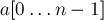
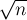
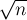
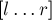
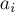
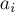
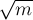

MAXimal
добавлено: 11 Jun 2008 10:54
редактировано: 14 Jan 2013 17:58
Содержание [скрыть]
Sqrt-декомпозиция
Sqrt-декомпозиция — это метод, или структура данных, которая позволяет выполнять некоторые типичные операции (суммирование элементов подмассива, нахождение минимума/максимума и т.д.) за  , что значительно быстрее, чем
, что значительно быстрее, чем  для тривиального алгоритма.
для тривиального алгоритма.
Сначала мы опишем структуру данных для одного из простейших применений этой идеи, затем покажем, как обобщать её для решения некоторых других задач, и, наконец, рассмотрим несколько иное применение этой идеи: разбиение входных запросов на sqrt-блоки.
Структура данных на основе sqrt-декомпозиции
Поставим задачу. Дан массив . Требуется реализовать такую структуру данных, которая сможет находить сумму элементов ![a[l \ldots r]](../tex2png/cache/61de5ad6b5b41c84e862798a8f59f0a9.png) для произвольных
для произвольных  и
и  за операций.
за операций.
Описание
Основная идея sqrt-декомпозиции заключается в том, что сделаем следующий предпосчёт: разделим массив  на блоки длины примерно , и в каждом блоке
на блоки длины примерно , и в каждом блоке  заранее предпосчитаем сумму
заранее предпосчитаем сумму ![b[i]](../tex2png/cache/e875235207203e3980be2bd509460e7a.png) элементов в нём.
элементов в нём.
Можно считать, что длина одного блока и количество блоков равны одному и тому же числу — корню из  , округлённому вверх:
, округлённому вверх:
тогда массив ![a[]](../tex2png/cache/0f0e294f3fa9d716ea988ff8370f698d.png) разбивается на блоки примерно таким образом:
разбивается на блоки примерно таким образом:
Хотя последний блок может содержать меньше, чем  , элементов (если не делится на ), — это не принципиально.
, элементов (если не делится на ), — это не принципиально.
Таким образом, для каждого блока  мы знаем сумму на нём :
мы знаем сумму на нём :
Итак, пусть эти значения предварительно подсчитаны (для этого надо, очевидно, операций). Что они могут дать при вычислении ответа на очередной запрос  ? Заметим, что если отрезок
? Заметим, что если отрезок ![[l;r]](../tex2png/cache/26853b907ea3f6227b00c5afac10292a.png) длинный, то в нём будут содержаться несколько блоков целиком, и на такие блоки мы можем узнать сумму на них за одну операцию. В итоге от всего отрезка останется лишь два блока, попадающие в него лишь частично, и на этих кусках нам придётся произвести суммирование тривиальным алгоритмом.
длинный, то в нём будут содержаться несколько блоков целиком, и на такие блоки мы можем узнать сумму на них за одну операцию. В итоге от всего отрезка останется лишь два блока, попадающие в него лишь частично, и на этих кусках нам придётся произвести суммирование тривиальным алгоритмом.
Иллюстрация (здесь через обозначен номер блока, в котором лежит , а через  — номер блока, в котором лежит ):
— номер блока, в котором лежит ):
На этом рисунке видно, что для того чтобы посчитать сумму в отрезке , надо просуммировать элементы только в двух "хвостах": и , и просуммировать значения во всех блоках, начиная с  и заканчивая :
и заканчивая :
(примечание: эта формула неверна, когда : в таком случае некоторые элементы будут просуммированы дважды; в этом случае надо просто просуммировать элементы с по )
Тем самым мы экононим значительное количество операций. Действительно, размер каждого из "хвостов", очевидно, не превосходит длины блока , и количество блоков также не превосходит . Поскольку мы выбирали , то всего для вычисления суммы на отрезке нам понадобится лишь операций.
Реализация
Приведём сначала простейшую реализацию:
// входные данные int n; vector<int> a (n); // предпосчёт int len = (int) sqrt (n + .0) + 1; // и размер блока, и количество блоков vector<int> b (len); for (int i=0; i<n; ++i) b[i / len] += a[i]; // ответ на запросы for (;;) { int l, r; // считываем входные данные - очередной запрос int sum = 0; for (int i=l; i<=r; ) if (i % len == 0 && i + len - 1 <= r) { // если i указывает на начало блока, целиком лежащего в [l;r] sum += b[i / len]; i += len; } else { sum += a[i]; ++i; } }
Недостатком этой реализации является то, что в ней неоправданно много операций деления (которые, как известно, выполняются значительно медленнее других операций). Вместо этого можно посчитать номера блоков и , в которых лежат границы и соответственно, и затем сделать цикл по блокам с по , отдельно обработав "хвосты" в блоках и . Кроме того, при такой реализации случай становится особым и требует отдельной обработки:
int sum = 0; int c_l = l / len, c_r = r / len; if (c_l == c_r) for (int i=l; i<=r; ++i) sum += a[i]; else { for (int i=l, end=(c_l+1)*len-1; i<=end; ++i) sum += a[i]; for (int i=c_l+1; i<=c_r-1; ++i) sum += b[i]; for (int i=c_r*len; i<=r; ++i) sum += a[i]; }
Другие задачи
Мы рассматривали задачу нахождения суммы элементов массива в каком-то его подотрезке. Эту задачу можно немного расширить: разрешим также меняться отдельным элементам массива  . Действительно, если меняется какой-то элемент , то достаточно обновить значение в том блоке, в котором этот элемент находится ():
. Действительно, если меняется какой-то элемент , то достаточно обновить значение в том блоке, в котором этот элемент находится ():
С другой стороны, вместо задачи о сумме аналогично можно решать задачи о минимальном, максимальном элементах в отрезке. Если в этих задачах допускать изменения отдельных элементов, то тоже надо будет пересчитывать значение того блока, которому принадлежит изменяемый элемент, но пересчитывать уже полностью, проходом по всем элементам блока за операций.
Аналогичным образом sqrt-декомпозицию можно применять и для множества других подобных задач: нахождение количества нулевых элементов, первого ненулевого элемента, подсчёта количества определённых элементов, и т.д.
Есть и целый класс задач, когда происходят изменения элементов на целом подотрезке: прибавление или присвоение элементов на каком-то подотрезке массива .
Например, нужно выполнять следующие два вида запросов: прибавить ко всем элементам некоторого отрезка величину  , и узнавать значение отдельного элемента . Тогда в качестве положим ту величину, которая должна быть прибавлена ко всем элементам -го блока (например, изначально все ); тогда при выполнении запроса "прибавление" нужно будет выполнить прибавление ко всем элементам "хвостов", а затем выполнить прибавление ко всем элементам
, и узнавать значение отдельного элемента . Тогда в качестве положим ту величину, которая должна быть прибавлена ко всем элементам -го блока (например, изначально все ); тогда при выполнении запроса "прибавление" нужно будет выполнить прибавление ко всем элементам "хвостов", а затем выполнить прибавление ко всем элементам  для блоков, целиком лежащих в отрезке . А ответом на второй запрос, очевидно, будет просто , где . Таким образом, прибавление на отрезке будет выполняться за , а запрос отдельного элемента — за
для блоков, целиком лежащих в отрезке . А ответом на второй запрос, очевидно, будет просто , где . Таким образом, прибавление на отрезке будет выполняться за , а запрос отдельного элемента — за  .
.
Наконец, можно комбинировать оба вида задач: изменение элементов на отрезке и ответ на запросы тоже на отрезке. Оба вида операций будут выполняться за . Для этого уже надо будет делать два "блоковых" массива  и
и  : один — для обеспечения изменений на отрезке, другой — для ответа на запросы.
: один — для обеспечения изменений на отрезке, другой — для ответа на запросы.
Можно привести пример и других задач, к которым можно применить sqrt-декомпозицию. Например, можно решать задачу о поддержании множества чисел с возможностью добавления/удаления чисел, проверки числа на принадлежность множеству, поиск -го по порядку числа. Для решения этой задачи надо хранить числа в отсортированном порядке, разделёнными на несколько блоков по чисел в каждом. При добавлении или удалении числа надо будет производить "перебалансировку" блоков, перебрасывая числа из начал/концов одних блоков в начала/концы соседних блоков.
Sqrt-декомпозиция входных запросов
Рассмотрим теперь совершенно иное применение идеи об sqrt-декомпозиции.
Предположим, что у нас есть некоторая задача, в которой нам даются некоторые входные данные, а затем поступают команд/запросов, каждую из которых мы должны дать обработать и выдать ответ. Мы рассматриваем случай, когда запросы бывают как запрашивающие (не меняющие состояния системы, а только запрашивающие некоторую информацию), так и модифицирующие (т.е. влияющие на состояние системы, изначально заданное входными данными).
Конкретная задача может быть весьма сложной, и "честное" её решение (которое считывает один запрос, обрабатывает его, изменяя состояние системы, и возвращает ответ) может быть технически сложным или вовсе быть не по силам для решающего. С другой стороны, решение "оффлайнового" варианта задачи, т.е. когда отсутствуют модифицирующие операции, а имеются только лишь запрашивающие запросы — часто оказывается гораздо проще. Предположим, что мы умеем решать "оффлайновый" вариант задачи, т.е. строить за некоторое время некую структуру данных, которая может отвечать на запросы, но не умеет обрабатывать модифицирующие запросы.
Тогда разобьём входные запросы на блоки (какой длины — пока не уточняем; обозначим эту длину через ). В начале обработки каждого блока будем за строить структуру данных для "оффлайнового" варианта задачи по состоянию данных на момент начала этого блока.
Теперь будем по очереди брать запросы из текущего блока и обрабатывать каждый из них. Если текущий запрос — модифицирующий, то пропустим его. Если же текущий запрос — запрашивающий, то обратимся к структуре данных для оффлайнового варианта задачи, но предварительно учтя все модифицирующие запросы в текущем блоке. Такое учитывание модифицирующих запросов бывает возможным далеко не всегда, и оно должно происходить достаточно быстро — за время или немного хуже; обозначим это время через .
Таким образом, если всего у нас  запросов, то на их обработку потребуется времени. Величину следует выбирать, исходя из конкретного вида функций и . Например, если и , то оптимальным выбором будет , и итоговая асимптотика получится .
запросов, то на их обработку потребуется времени. Величину следует выбирать, исходя из конкретного вида функций и . Например, если и , то оптимальным выбором будет , и итоговая асимптотика получится .
Поскольку приведённые выше рассуждения слишком абстрактны, приведём несколько примеров задач, к которым применима такая sqrt-декомпозиция.
Пример задачи: прибавление на отрезке
Условие задачи: дан массив чисел , и поступают запросы двух видов: узнать значение в -ом элементе массива, и прибавить некоторое число  ко всем элементам массива в некотором отрезке
ко всем элементам массива в некотором отрезке ![a[l \dots r]](../tex2png/cache/301805acd8bb348b42f7e89540ac8d84.png) .
.
Хотя эту задачу можно решать и без этого приёма с разбиением запросов на блоки, мы приведём её здесь — как простейшее и наглядное применение этого метода.
Итак, разобьём входные запросы на блоки по  (где — число запросов). В начале первого блока запросов никаких структур строить не надо, просто храним массив . Идём теперь по запросам первого блока. Если текущий запрос — запрос прибавления, то пока пропускаем его. Если же текущий запрос — запрос чтения значения в некоторой позиции , то вначале просто возьмём в качестве ответа значение ![a[i]](../tex2png/cache/3530c8c1281c8ee618b020a2333a22ca.png) . Затем пройдёмся по всем пропущенным в этом блоке запросам прибавления, и для тех из них, в которые попадает , применим их увеличения к текущему ответу.
. Затем пройдёмся по всем пропущенным в этом блоке запросам прибавления, и для тех из них, в которые попадает , применим их увеличения к текущему ответу.
Таким образом, мы научились отвечать на запрашивающие запросы за время  .
.
Осталось только заметить, что в конце каждого блока запросов мы должны применить все модифицирующие запросы этого блока к массиву . Но это легко сделать за — достаточно для каждого запроса прибавления  отметить в вспомогательном массиве в точке число , а в точке — число , и затем пройтись по этому массиву, прибавляя текущую сумму к массиву .
отметить в вспомогательном массиве в точке число , а в точке — число , и затем пройтись по этому массиву, прибавляя текущую сумму к массиву .
Таким образом, итоговая асимптотика решения составит .
Пример задачи: disjoint-set-union с разделением
Есть неориентированный граф с вершинами и рёбрами. Поступают запросы трёх видов: добавить ребро  , удалить ребро , и проверить, связаны или нет вершины
, удалить ребро , и проверить, связаны или нет вершины  и
и  путём.
путём.
Если бы запросы удаления отсутствовали, то решением задачи была бы известная структура данных disjoint-set-union (система непересекающихся множеств). Однако при наличии удалений задача значительно усложняется.
Сделаем следующим образом. В начале каждого блока запросов посмотрим, какие рёбра в этом блоке будут удаляться, и сразу удалим их из графа. Теперь построим систему непересекающихся множеств (dsu) на полученном графе.
Как мы теперь должны отвечать на очередной запрос из текущего блока? Наша система непересекающихся множеств "знает" обо всех рёбрах, кроме тех, что добавляются/удаляются в текущем блоке. Однако удаления из dsu нам делать уже не надо — мы заранее удалили все такие рёбра из графа. Таким образом, всё, что может быть — это дополнительные, добавляющиеся рёбра, которых может быть максимум штук.
Следовательно, при ответе на текущий запрашивающий запрос мы можем просто пустить обход в ширину по компонентам связности dsu, который отработает за , поскольку у нас в рассмотрении будут только рёбер.
Оффлайновые задачи на запросы на подотрезках массива и универсальная sqrt-эвристика для них
Рассмотрим ещё одну интересную вариацию идеи sqrt-декомпозиции.
Пусть у нас есть некоторая задача, в которой есть массив чисел, и поступают запрашивающие запросы, имеющие вид — узнать что-то о подотрезке . Мы считаем, что запросы не модифицирующие, и известны нам заранее, т.е. задача — оффлайновая.
Наконец, введём последнее ограничение: мы считаем, что умеем быстро пересчитывать ответ на запрос при изменении левой или правой границы на единицу. Т.е. если мы знали ответ на запрос , то быстро сможем посчитать ответ на запрос или или или .
Опишем теперь универсальную эвристику для всех таких задач. Отсортируем запросы по паре: . Т.е. мы отсортировали запросы по номеру sqrt-блока, в котором лежит левый конец, а при равенстве — по правому концу.
Рассмотрим теперь группу запросов с одинаковым значением  и будем обрабатывать все запросы этой группы. Ответ на первый запрос посчитаем тривиальным образом. Каждый следующий запрос будем считать на основе предыдущего ответа: т.е. двигать левую и правую границы предыдущего запроса к границам следующего запроса, поддерживая при этом текущий ответ. Оценим асимптотику: левая граница каждый раз могла двигаться на не более раз, а правая — не более раз в сумме по всем запросам текущей группы. Итого, если текущая группа состояла из запросов, в сумме будет совершено не более пересчётов. В сумме по всему алгоритму получится — пересчётов.
и будем обрабатывать все запросы этой группы. Ответ на первый запрос посчитаем тривиальным образом. Каждый следующий запрос будем считать на основе предыдущего ответа: т.е. двигать левую и правую границы предыдущего запроса к границам следующего запроса, поддерживая при этом текущий ответ. Оценим асимптотику: левая граница каждый раз могла двигаться на не более раз, а правая — не более раз в сумме по всем запросам текущей группы. Итого, если текущая группа состояла из запросов, в сумме будет совершено не более пересчётов. В сумме по всему алгоритму получится — пересчётов.
Простым примером на данную эвристику является такая задача: узнать количество различных чисел в отрезке массива .
Чуть более усложнённым вариантом этой задачи является задача с одного из раундов Codeforces.